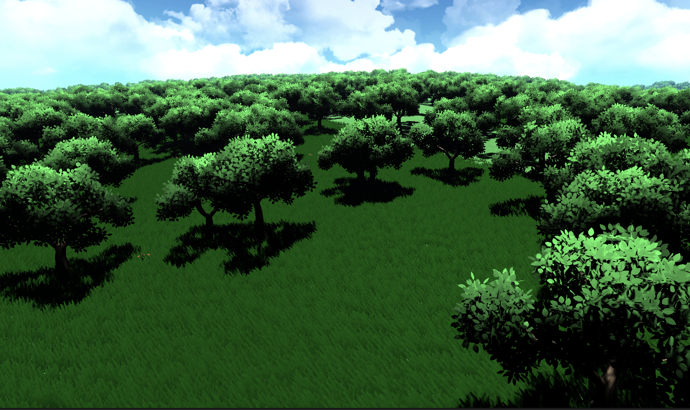

Natural Explorer
Open-world level design study focused on nature, space, and flow.

An open-world level built in Unity with C#. Players explore natural environments — flowers, trees, grass — and observe the spaces around them. The focus is readability, pacing, and how open terrain guides movement.
Ongoing work toward turning the level into a fuller collect-and-explore experience.